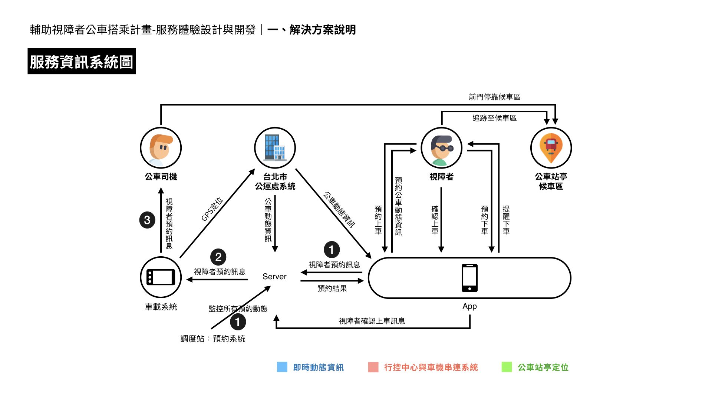
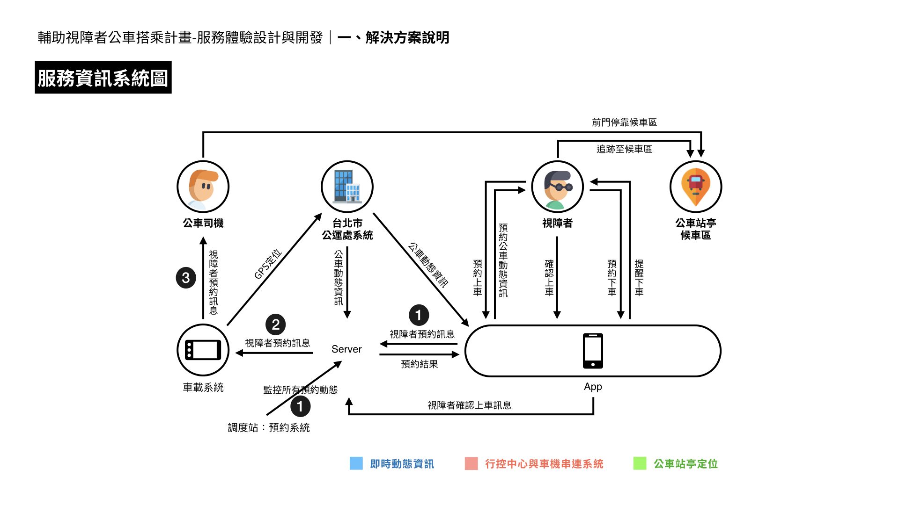

Posted by Wei-An 謝維安 · Dec 17, 2019 at 1:25 PM 唐老師生日快樂 ft. 第一次查核會議簡報請速閱 各位好，第一次查核會議簡報上傳於此，大部分都跟十二月月會相同，請各位老師及助理協助確認內容是否有誤或不妥當，尤其是「02計畫進度總覽」及「04資源需求」的部份。（資源需求若還不確定，可以先不放上此頁，當天會議再報）由於簡報稍有拖延，須於明早 (12/18) 8點前寄出，還請各位於今晚凌晨1點前回饋完畢，謝謝！然後唐老師生日快樂，可以大餐配簡報～～～PS. 簡報中較多動畫呈現，以 keynote 檔打開較不易失真ㄛ！ 第一次查核會議.pdf 32.1 MB • Download 第一次查核會議.key 78.8 MB • Download Comments & Events Thompson Lin 感謝安安～ 也祝唐老師生日快樂！🎂 Dec 17, 2019 at 1:29 PM Notified 13 people Nicole Yeh, Research Assistant Hsien-Hui 生日快樂！！ Dec 17, 2019 at 1:29 PM Notified 13 people Nicole Yeh, Research Assistant 這邊有幾個問題感覺需要做修改🥺🥺1. 第四頁系統圖的地方APP收到預約後資訊應該會直接傳送到車機上，調度員只是透過動態系統去監控整個過程而已，我把正確流程放在下面，或是我直接幫忙做更改也可以，看安安怎麼樣比較方便～～2. 第七頁服務流程圖的地方，車機收到預約訊息後還會多一個步驟是觸控回饋告知調度站「司機收到訊息了」，這個步驟感覺也蠻重要的，如果可以的話希望可以加上去～～3. 第八頁服務流程圖，APP確認上車的那一步，車機不會發送確認上車通知哦，都是從APP那邊發出的4. 第二十頁，車機圖示是影片檔，需要點按後他才會播放，可以把它設置成到那一頁就直接播放，這樣報告起來可能會比較順～～以上！麻煩安安了，辛苦了😭😭😭 愛妳 晚點改 這幾頁是我做的，我來幫忙改吧～ Dec 17, 2019 at 1:45 PM Notified 13 people Nicole Yeh, Research Assistant  傳訊流程.001.jpeg 360 KB • Download Dec 17, 2019 at 1:46 PM Notified 13 people Nicole Yeh, Research Assistant keynote版本在這邊～～ 流程圖更改版.key 784 KB • Download Dec 17, 2019 at 1:56 PM Notified 13 people Hsien-Hui Tang 唐玄輝, 總監 版本內容沒有問題～有人可以再說一次給我聽嗎？要加上我們所需要的幫助。要加上目前是平行進行，一邊是我們自己的POC，一邊是要落地的實務版本。整合後給我～ 老師我明天下課跟您約討論 Dec 17, 2019 at 2:15 PM Notified 13 people Thompson Lin 1. p.11 前期研究還有調度員1場，然後測試回饋的司機場不只4場，總共有8場～ （包含p.20）2. p.6、7 左邊「公車調度員」的角色建議可改為「中心Server」，因為調度員不會有傳送預約訊息這些行為～3. p.6、7 車機的「燈號與聲音提醒有預約」可以多加個「文字」～ 其他好趴呢Nicole都有提過了，感謝安安！ Dec 17, 2019 at 2:23 PM Notified 13 people Wei-An 謝維安, 碩士生 各位晚安，此為經 Nicole 與 Thom 的建議修改後的版本，目前將「04資源需求」頁先行略過，不知 A-Bao 認為科技部能否接受？若無其他建議，即可以這個版本寄出，謝謝！ 第一次查核會議.pdf 32.1 MB • Download ok Dec 17, 2019 at 5:56 PM Notified 13 people A-Bao, 計畫伴隨者 我覺得OK,可先寄出，但或許現場版補上受測人次，因為現在版本只有場次，無人次，但人次會是檢視指標。另外現場版可能要再加一張說明一條線三方串聯測試規劃，目前只有寫一句，但這規劃應也是大家想看到重點。可說明何時測，多少人次，哪條線，一線完整測試規劃可出來較佳。以上建議。 Dec 17, 2019 at 9:48 PM Notified 13 people Wei-An 謝維安, 碩士生 各位好，回應科技部與寶苑的回饋，簡報增加了三方測試規劃的內容簡述，並刪除原資源需求的章節（因無直接面向科技部的需求），簡報檔案如下 191222第一次查核會議.pdf 37.3 MB • Download Dec 21, 2019 at 4:14 PM Notified 13 people Hsien-Hui Tang 唐玄輝, 總監 Wei-An 我需要keynote 才能修改 Dec 21, 2019 at 4:17 PM Notified 13 people Wei-An 謝維安, 碩士生 先傳在這裡，已同步上傳至雲端：https://drive.google.com/drive/u/0/folders/19H1pgM-19pimmjpaOIIfH9sL1FosEpXN 第一次查核會議.key 93.4 MB • Download Dec 21, 2019 at 4:22 PM Notified 13 people Wei-An 謝維安, 碩士生 （19:44更新版）簡報連結：https://drive.google.com/drive/u/0/folders/19H1pgM-19pimmjpaOIIfH9sL1FosEpXN Dec 22, 2019 at 11:47 AM Notified 13 people Wei-An 謝維安, 碩士生 應該是終版了ＸＤ（00:48更新版）簡報連結：https://drive.google.com/drive/u/0/folders/19H1pgM-19pimmjpaOIIfH9sL1FosEpXN 20191223第一次查核會議.key 115 MB • Download 辛苦安安ㄌ～～ 👍 Dec 22, 2019 at 4:50 PM Notified 13 people A-Bao, 計畫伴隨者 團隊好，剛先看一下等下會議室的設備，若團隊用自己電腦報告，會議室的接頭是VGA，請注意。另外如果今天有更新檔簡報，煩請轉成PDF檔寄出給紹平及雨瑄，CC給我。感謝！今天出席的四位委員則分別是： 馮明惠（資策會）、洪千惠（淡江資源中心）、汪世昌（中華電信）、吳炳飛（交大-之前二次審查都是書審，未到會議審，但之前在最前面的專家會議上唐老師及Jones有見過）。大家加油！辛苦了，待會見！ Dec 23, 2019 at 1:14 AM Notified 13 people A-Bao, 計畫伴隨者 出席委員的書面手寫意見回來了，都很順利，無太大問題。之後科技部會正式行文會議紀錄給團隊。謝謝大家!這周尤其是辛苦了。 Dec 23, 2019 at 9:42 AM Notified 13 people
Nicole Yeh, Research Assistant 這邊有幾個問題感覺需要做修改🥺🥺1. 第四頁系統圖的地方APP收到預約後資訊應該會直接傳送到車機上，調度員只是透過動態系統去監控整個過程而已，我把正確流程放在下面，或是我直接幫忙做更改也可以，看安安怎麼樣比較方便～～2. 第七頁服務流程圖的地方，車機收到預約訊息後還會多一個步驟是觸控回饋告知調度站「司機收到訊息了」，這個步驟感覺也蠻重要的，如果可以的話希望可以加上去～～3. 第八頁服務流程圖，APP確認上車的那一步，車機不會發送確認上車通知哦，都是從APP那邊發出的4. 第二十頁，車機圖示是影片檔，需要點按後他才會播放，可以把它設置成到那一頁就直接播放，這樣報告起來可能會比較順～～以上！麻煩安安了，辛苦了😭😭😭 愛妳 晚點改 這幾頁是我做的，我來幫忙改吧～ Dec 17, 2019 at 1:45 PM Notified 13 people
Nicole Yeh, Research Assistant  傳訊流程.001.jpeg 360 KB • Download Dec 17, 2019 at 1:46 PM Notified 13 people
Nicole Yeh, Research Assistant keynote版本在這邊～～ 流程圖更改版.key 784 KB • Download Dec 17, 2019 at 1:56 PM Notified 13 people
Hsien-Hui Tang 唐玄輝, 總監 版本內容沒有問題～有人可以再說一次給我聽嗎？要加上我們所需要的幫助。要加上目前是平行進行，一邊是我們自己的POC，一邊是要落地的實務版本。整合後給我～ 老師我明天下課跟您約討論 Dec 17, 2019 at 2:15 PM Notified 13 people
Thompson Lin 1. p.11 前期研究還有調度員1場，然後測試回饋的司機場不只4場，總共有8場～ （包含p.20）2. p.6、7 左邊「公車調度員」的角色建議可改為「中心Server」，因為調度員不會有傳送預約訊息這些行為～3. p.6、7 車機的「燈號與聲音提醒有預約」可以多加個「文字」～ 其他好趴呢Nicole都有提過了，感謝安安！ Dec 17, 2019 at 2:23 PM Notified 13 people
Wei-An 謝維安, 碩士生 各位晚安，此為經 Nicole 與 Thom 的建議修改後的版本，目前將「04資源需求」頁先行略過，不知 A-Bao 認為科技部能否接受？若無其他建議，即可以這個版本寄出，謝謝！ 第一次查核會議.pdf 32.1 MB • Download ok Dec 17, 2019 at 5:56 PM Notified 13 people
A-Bao, 計畫伴隨者 我覺得OK,可先寄出，但或許現場版補上受測人次，因為現在版本只有場次，無人次，但人次會是檢視指標。另外現場版可能要再加一張說明一條線三方串聯測試規劃，目前只有寫一句，但這規劃應也是大家想看到重點。可說明何時測，多少人次，哪條線，一線完整測試規劃可出來較佳。以上建議。 Dec 17, 2019 at 9:48 PM Notified 13 people
Wei-An 謝維安, 碩士生 各位好，回應科技部與寶苑的回饋，簡報增加了三方測試規劃的內容簡述，並刪除原資源需求的章節（因無直接面向科技部的需求），簡報檔案如下 191222第一次查核會議.pdf 37.3 MB • Download Dec 21, 2019 at 4:14 PM Notified 13 people
Wei-An 謝維安, 碩士生 先傳在這裡，已同步上傳至雲端：https://drive.google.com/drive/u/0/folders/19H1pgM-19pimmjpaOIIfH9sL1FosEpXN 第一次查核會議.key 93.4 MB • Download Dec 21, 2019 at 4:22 PM Notified 13 people
Wei-An 謝維安, 碩士生 （19:44更新版）簡報連結：https://drive.google.com/drive/u/0/folders/19H1pgM-19pimmjpaOIIfH9sL1FosEpXN Dec 22, 2019 at 11:47 AM Notified 13 people
Wei-An 謝維安, 碩士生 應該是終版了ＸＤ（00:48更新版）簡報連結：https://drive.google.com/drive/u/0/folders/19H1pgM-19pimmjpaOIIfH9sL1FosEpXN 20191223第一次查核會議.key 115 MB • Download 辛苦安安ㄌ～～ 👍 Dec 22, 2019 at 4:50 PM Notified 13 people
A-Bao, 計畫伴隨者 團隊好，剛先看一下等下會議室的設備，若團隊用自己電腦報告，會議室的接頭是VGA，請注意。另外如果今天有更新檔簡報，煩請轉成PDF檔寄出給紹平及雨瑄，CC給我。感謝！今天出席的四位委員則分別是： 馮明惠（資策會）、洪千惠（淡江資源中心）、汪世昌（中華電信）、吳炳飛（交大-之前二次審查都是書審，未到會議審，但之前在最前面的專家會議上唐老師及Jones有見過）。大家加油！辛苦了，待會見！ Dec 23, 2019 at 1:14 AM Notified 13 people
A-Bao, 計畫伴隨者 出席委員的書面手寫意見回來了，都很順利，無太大問題。之後科技部會正式行文會議紀錄給團隊。謝謝大家!這周尤其是辛苦了。 Dec 23, 2019 at 9:42 AM Notified 13 people

1. 第四頁系統圖的地方APP收到預約後資訊應該會直接傳送到車機上，調度員只是透過動態系統去監控整個過程而已，我把正確流程放在下面，或是我直接幫忙做更改也可以，看安安怎麼樣比較方便～～
2. 第七頁服務流程圖的地方，車機收到預約訊息後還會多一個步驟是觸控回饋告知調度站「司機收到訊息了」，這個步驟感覺也蠻重要的，如果可以的話希望可以加上去～～
3. 第八頁服務流程圖，APP確認上車的那一步，車機不會發送確認上車通知哦，都是從APP那邊發出的
4. 第二十頁，車機圖示是影片檔，需要點按後他才會播放，可以把它設置成到那一頁就直接播放，這樣報告起來可能會比較順～～
以上！麻煩安安了，辛苦了😭😭😭
有人可以再說一次給我聽嗎？
要加上我們所需要的幫助。
要加上目前是平行進行，一邊是我們自己的POC，一邊是要落地的實務版本。
整合後給我～
2. p.6、7 左邊「公車調度員」的角色建議可改為「中心Server」，因為調度員不會有傳送預約訊息這些行為～
3. p.6、7 車機的「燈號與聲音提醒有預約」可以多加個「文字」～
其他好趴呢Nicole都有提過了，感謝安安！
https://drive.google.com/drive/u/0/folders/19H1pgM-19pimmjpaOIIfH9sL1FosEpXN
（00:48更新版）簡報連結：
https://drive.google.com/drive/u/0/folders/19H1pgM-19pimmjpaOIIfH9sL1FosEpXN
今天出席的四位委員則分別是： 馮明惠（資策會）、洪千惠（淡江資源中心）、汪世昌（中華電信）、吳炳飛（交大-之前二次審查都是書審，未到會議審，但之前在最前面的專家會議上唐老師及Jones有見過）。大家加油！辛苦了，待會見！